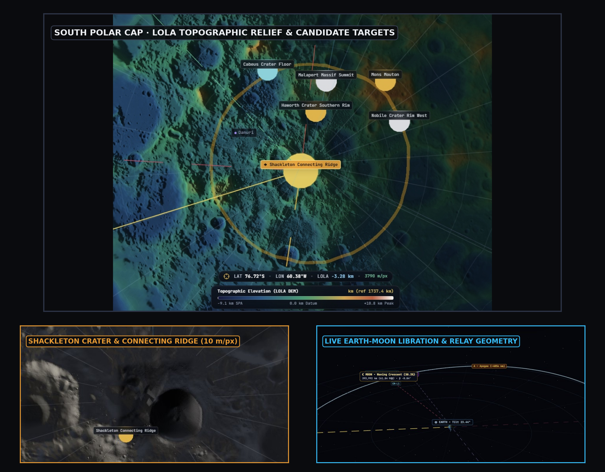
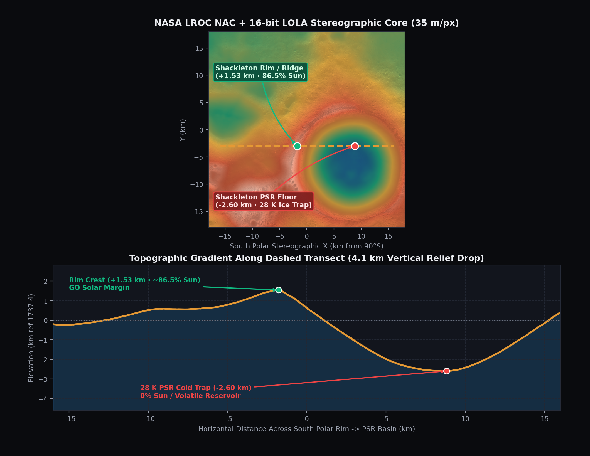
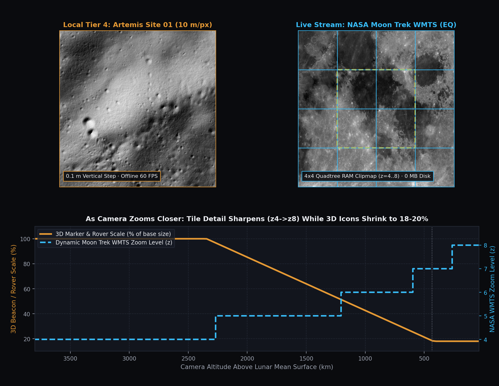
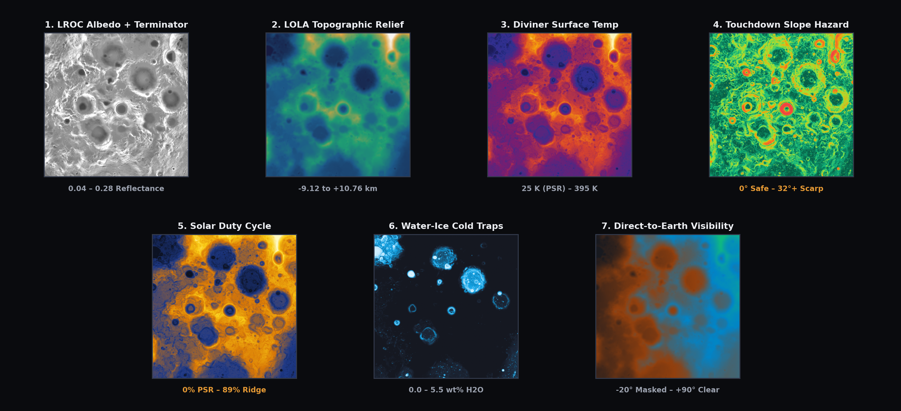
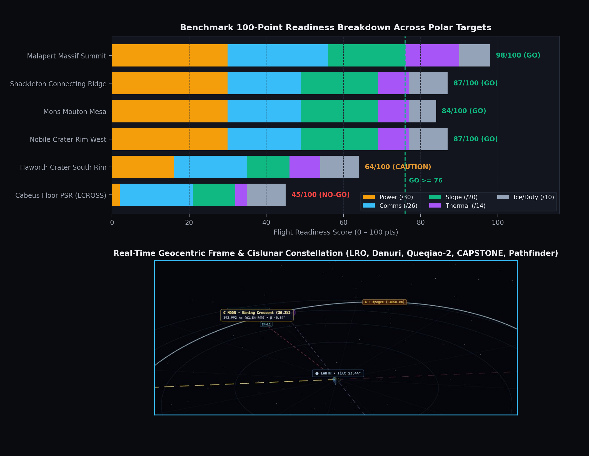
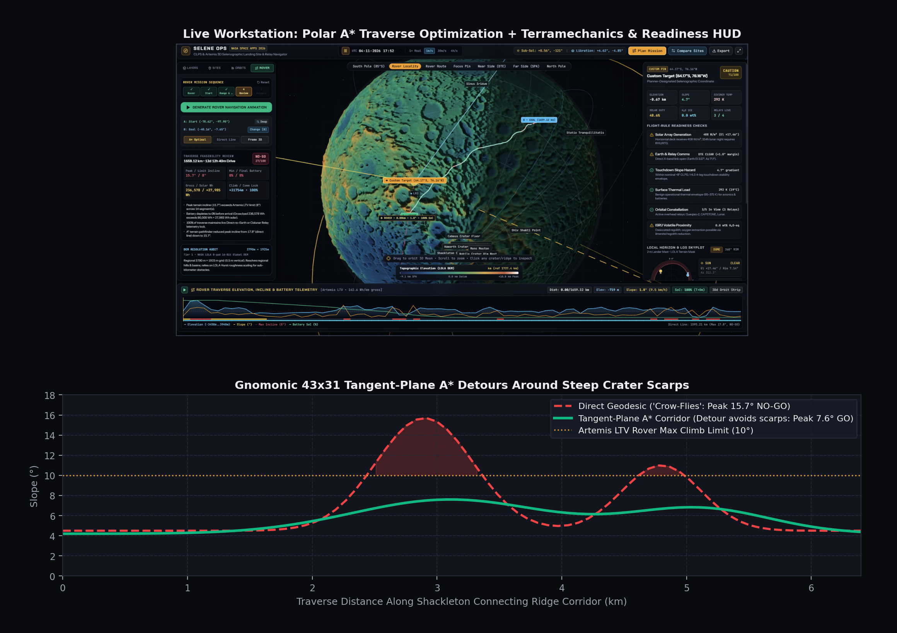

SELENE OPS
3D Selenographic Mission Readiness, Relay & Rover Navigator
Unifying hybrid NASA LOLA South Pole elevation clipmaps (down to 10 m/px), live NASA Moon Trek WMTS streaming, 360° horizon ray-tracing, and A* rover pathfinding inside one 60 FPS workstation.

Why Lunar South Pole Landings Fail Without Coupled Analysis
Artemis and CLPS landers operate inside millimeter-tight solar, thermal, slope, and Earth-libration margins.
Grazing Sunlight (0° to 3° Incidence)
Shifting just 2 km off Shackleton Connecting Ridge drops annual solar duty from 86.5% to 0% permanent darkness.
Cryogenic Cold Traps (25–45 K)
Permanently Shadowed Regions store up to 5.5 wt% water ice alongside deep thermal survival hazards.
Touchdown Slope Limits (>12° NO-GO)
CLPS and HLS 4-leg landers require flat <8° pads surrounded by 25°–32° inner crater walls.
27.2-Day Optical Libration (±6.68°)
Earth dips behind crater rims for ~13 days every synodic cycle, blocking Direct-to-Earth links without relays.

10 m/px Local South Pole + Google Maps–Style Moon Trek WMTS
Zero multi-gigabyte disk bloat while preserving polar stereographic displacement and 60 FPS interactivity.
3-Tier South Polar Stereographic Pyramid
Algebraic polar projection (IAU2000:30162) removes pole pinching, combining LROC NAC 35 m/px, Artemis 75 m/px, and 16-bit LOLA DEMs down to 10 m/px at Site 01.
Live NASA Moon Trek OGC WMTS Streaming
wmtsTileStreamer.ts fetches 256×256 global tiles (z=4..8) into a 4×4 RAM clipmap with a 192-tile LRU cache and parent-tile fallback.
Altitude-Adaptive Dynamic 3D Scaling
All beacons, labels, waypoints, and the articulated 3D rover shrink cleanly to 18–20% close to the surface so fine craters stay unobstructed.

Seven Synchronized Multi-Physics Planetary Layers (60 FPS)
Real-time WebGL shaders evaluate optical reflectance, LOLA topography, Diviner temperatures, slopes, lighting, ice, and comms.

Transparent 100-Point Readiness Model & Cislunar Constellation
Explains exactly why a landing target is GO, CAUTION, or NO-GO at any past or future UTC mission epoch.
GO (≥ 76/100) vs. Automatic NO-GO Rules
Slope >12°, solar eclipse (<150 W/m²), or total DTE/relay blackout trigger automatic NO-GO status.
Weighted Subsystem Breakdown (/100)
Solar Power (/30) + Earth & Relay Comms (/26) + Slope (/20) + Thermal 95–375 K (/14) + Ice/Solar Duty (/10).
36-Azimuth Horizon Ray-Tracing & 5 Relays
Ray-marches LOLA crater rims around a 2 m mast and propagates LRO, Danuri, Queqiao-2, CAPSTONE NRHO, and Pathfinder.

Singularity-Free Polar A* Rover Traverse & Energy Planner
Tangent-plane pathfinding routes safely around steep crater scarps and models net battery State-of-Charge.
Gnomonic 43×31 Polar Grid
Orthonormal tangent plane eliminates -90° longitude pinching with 16-direction transitions.
Soft-Barrier Slope Avoidance
Penalizes steep inclines to keep traverses within rover climb envelopes vs. dangerous straight lines.
Lunar Terramechanics Physics
Integrates g = 1.625 m/s², slip losses, downhill regen, hotel load, and local-horizon solar recharge.
Epoch-Synced Telemetry Exports
Includes 3D animated rover playback and high-DPI interactive SVG/PNG telemetry plots.

Anchored to Official Space Agency Data & Open-Source WebGL
Ready for Artemis III & CLPS mission engineers, hackathon judges, and STEM lunar navigation outreach.
| Dataset / Service | Agency / Source | Role in SELENE OPS |
|---|---|---|
| NASA Moon Trek WMTS | NASA Solar System Treks | Live global 303 ppd WAC tile stream (z=4..8) |
| LOLA 16-bit Global & Polar | NASA GSFC / MIT PDS | 3D relief, slope gradients & horizon masking |
| Artemis Site 01 (10 m/px) | NASA GSFC PGDA | Tactical crater-rim rover & lander hazard DEM |
| LROC WAC / NAC Mosaics | ASU LROC QuickMap | 35 m/px & 75 m/px polar imagery + natural albedo |
| Diviner Radiometer (DLRE) | UCLA / NASA LRO | Bolometric temp calibration (25–395 K PSRs) |
| LPNS & LEND Volatiles | NASA Lunar Prospector | Polar water-ice cold-trap concentrations |
| JPL Horizons & CSA | NASA JPL / CSA | Ephemeris validation & rover mobility bounds |
Zero-Install Browser Stack
React 18 · TypeScript · Three.js / WebGL · Tailwind CSS · Vite · Python PDS/PGDA tile pipeline.
Readable Mission-First Design
Unified Space Grotesk + Plus Jakarta Sans typography, collapsible ribbon tabs, and clear GO/NO-GO scoring rules.
Project Submission Assets
Live App: selene-ops.vercel.app
Repo: github.com/AryanBanker07/selene_ops
PowerPoint Deck: SELENE_OPS_SpaceApps_2026_Presentation.pptx